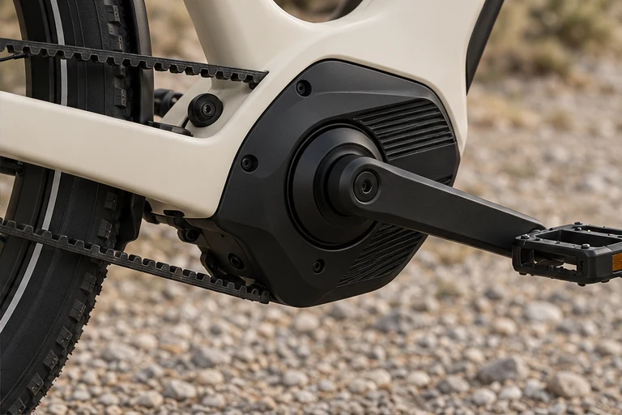
NEAR
HORIZON
HORIZON
NEAR HORIZON
VIEW PROJECTSome places only feel far. Near Horizon is an electric mobility concept for the places beyond the usual route. A lake outside the city. A friend across town. Somewhere the last stop doesn’t quite reach. Through a precise visual identity, considered product design and an open digital experience, the brand brings one idea to life: make far feel close.
PROJECT &
SCOPE
- BRAND CONCEPT
- VISUAL IDENTITY
- ART DIRECTION
- DIGITAL EXPERIENCE
THE IDEA &
EXPRESSION
- MAKE FAR FEEL CLOSE.
- BEYOND THE LAST STOP.
- LOOK WHERE I CAN GO.
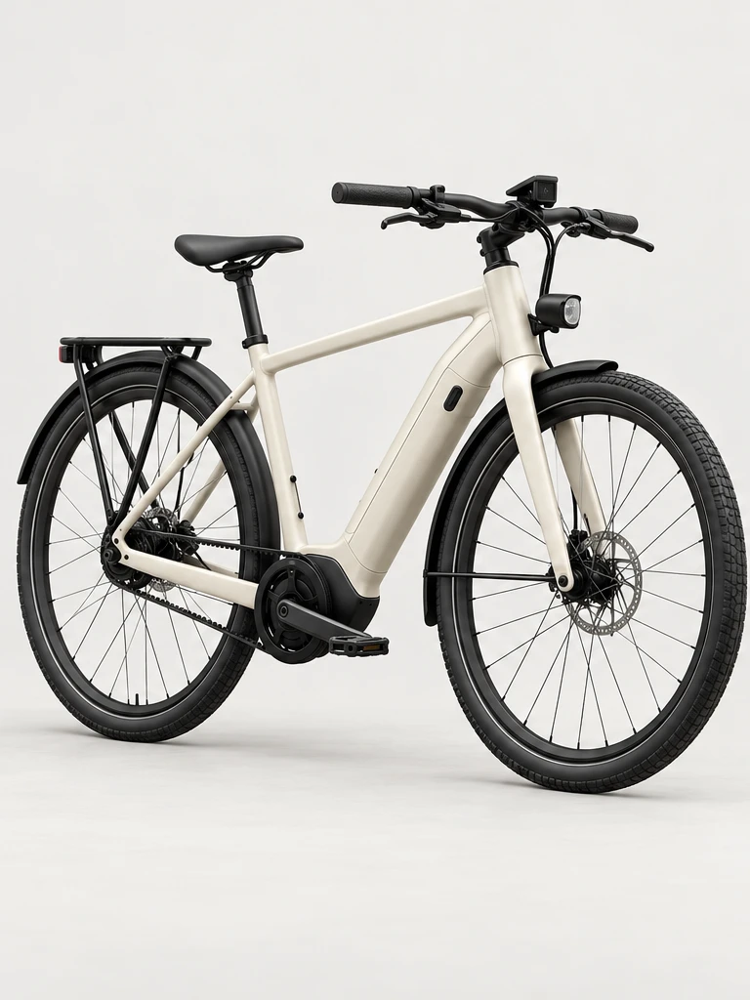
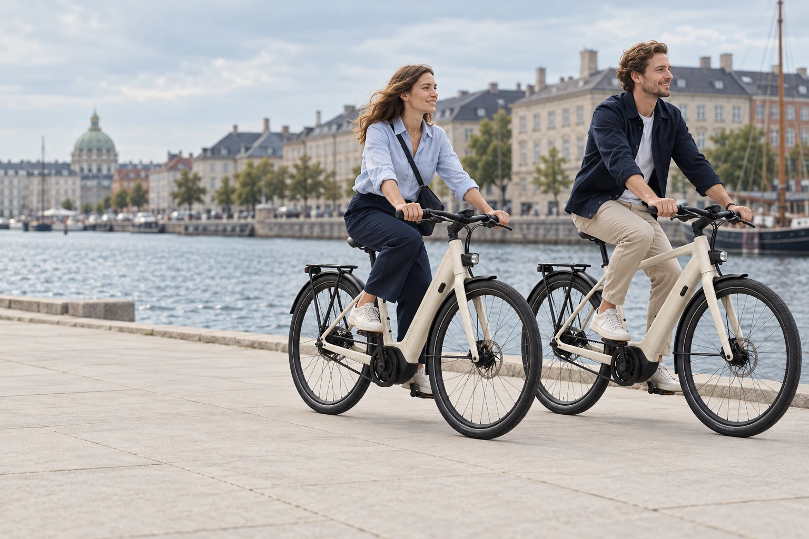
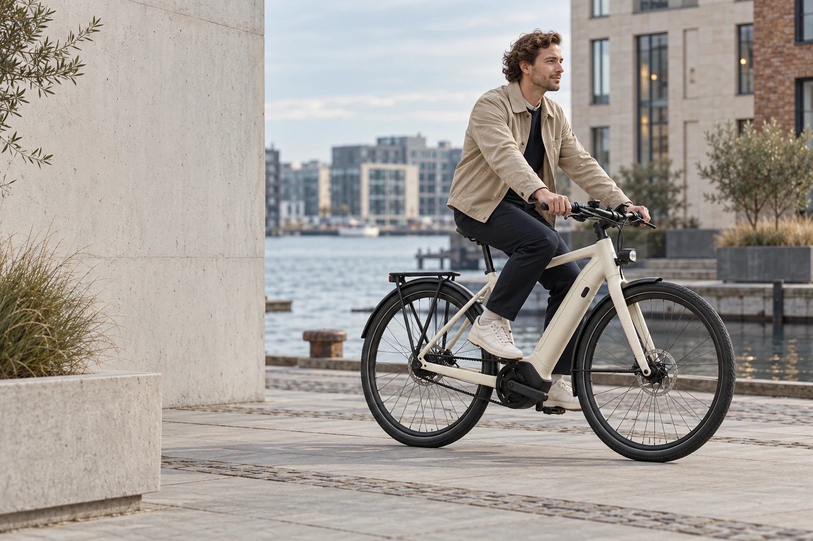
THE IDENTITYMAKE FAR FEEL CLOSE.
NEAR
HORIZON
HORIZON
NH
Calm. Capable. Precise.
An open point of view.
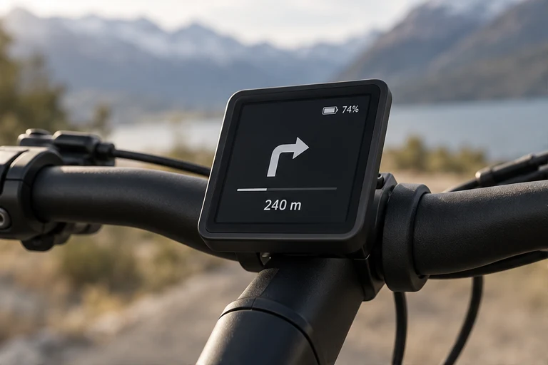
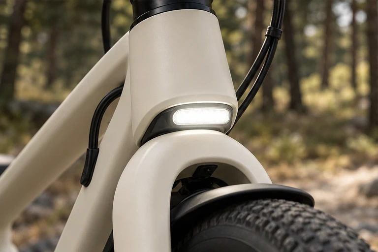
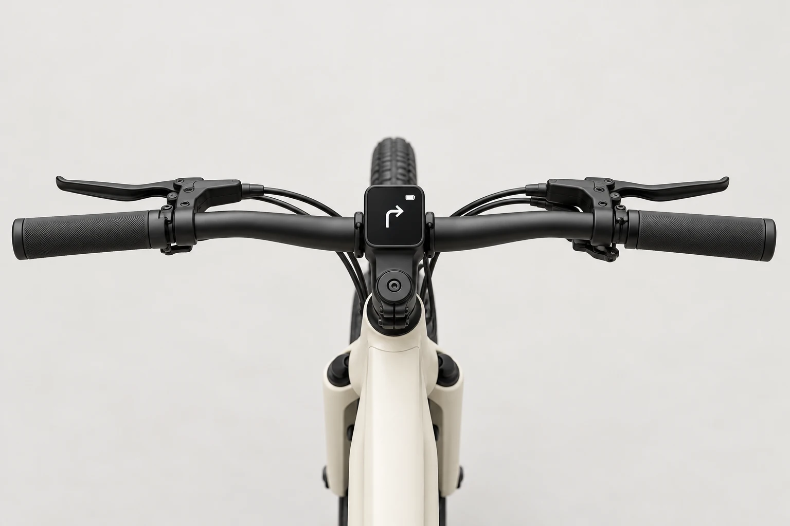
NEAR
HORIZONTHE BIKES OUR STORY
HORIZONTHE BIKES OUR STORY
Near HorizonMake far
Make far
feel close.
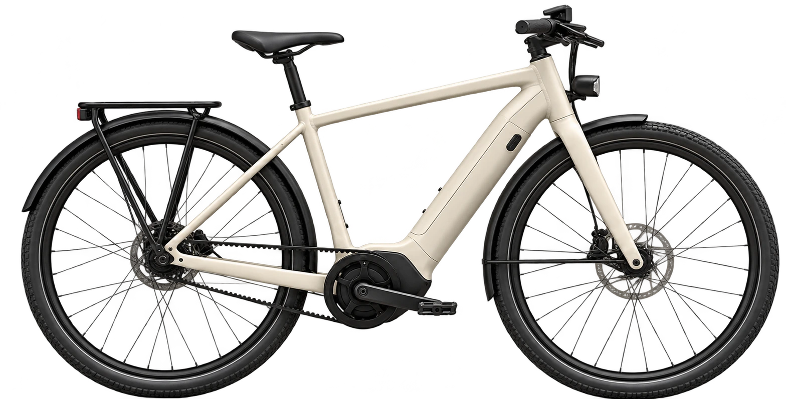
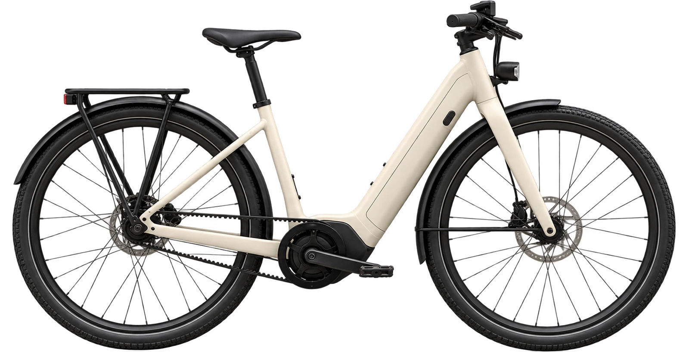
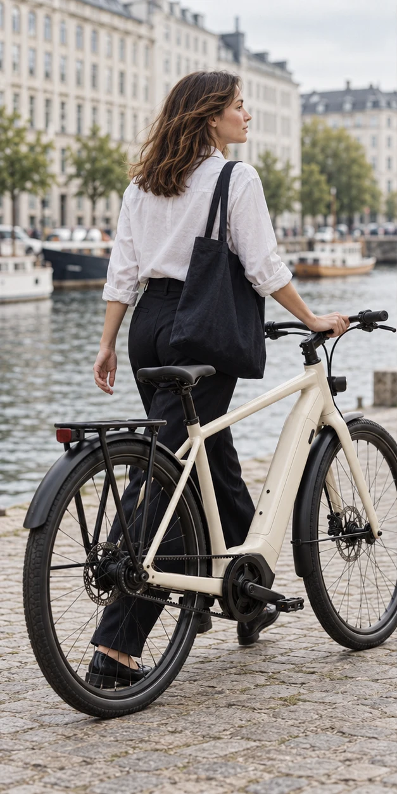
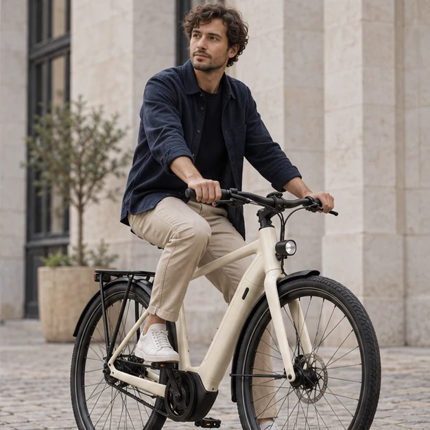
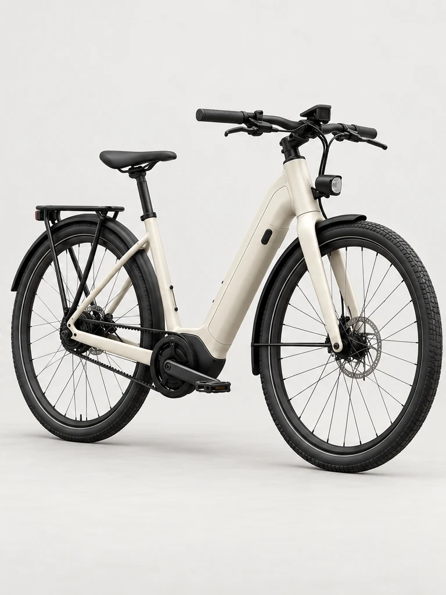
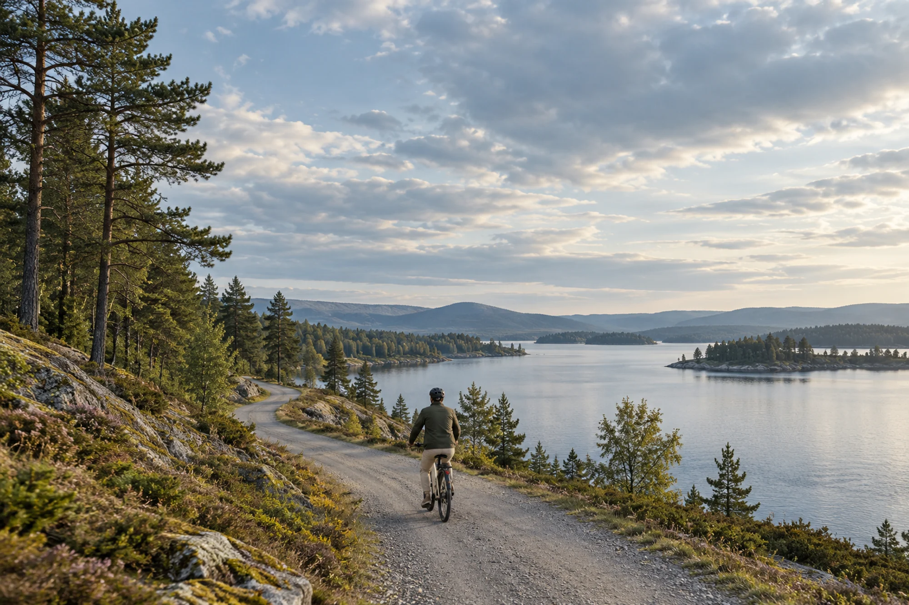